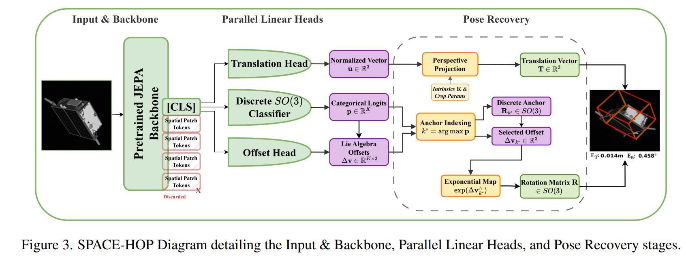
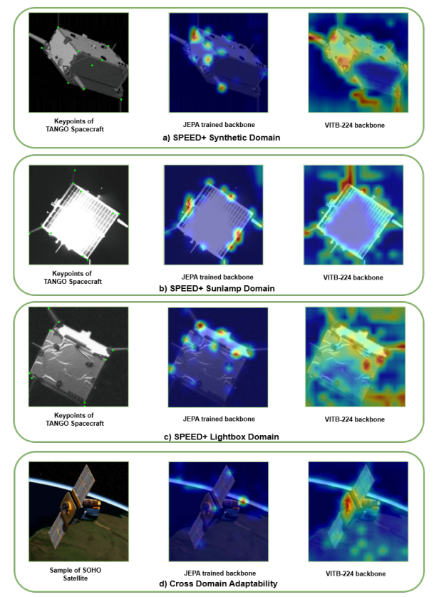
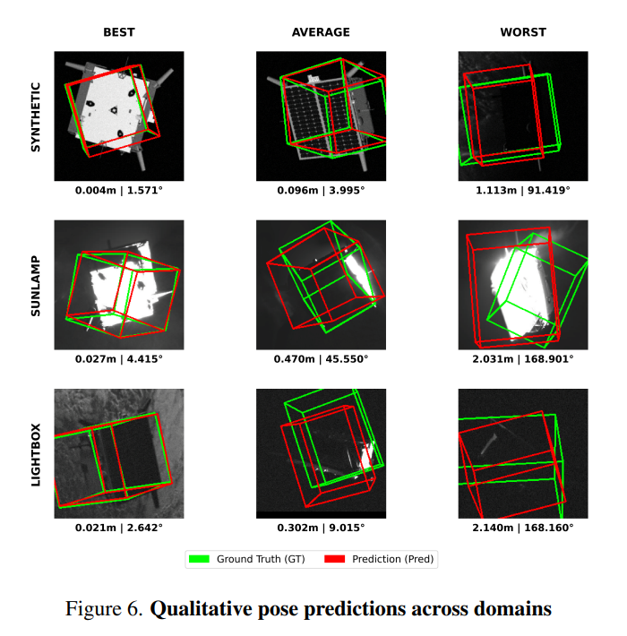
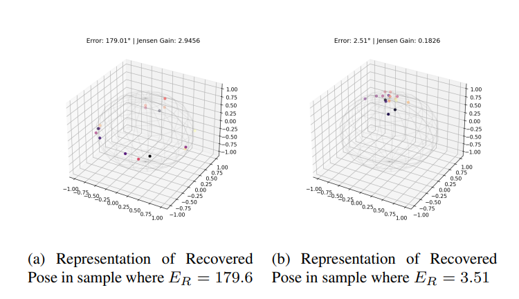

Abstract
Vision-based methods capable of determining the 6-Degrees of Freedom (6-DoF) pose of a spacecraft are crucial for rendezvous, proximity operations, and docking. These operations involve a series of orbital maneuvers required to achieve orbital synchronization and precise orientation alignment. Despite significant progress, existing methods exhibit two major limitations. First, reconstruction-driven objectives often prioritize pixel-level fidelity, neglecting the physically meaningful geometric structure embedded in semantic representations. Second, deterministic pose regression methods are inherently sensitive to noise and prone to convergence instability. Although continuous probabilistic modeling such as the Matrix Fisher distribution captures spatial uncertainty, its computational complexity is impractical.
To address these challenges, we propose SPACE-HOP which leverages masking-based self-supervised joint embedding-predictive architecture (JEPA) for spacecraft pose estimation. The method pre-trains an encoder-predictor Vision Transformer to learn geometry-aware representations. We then present a novel method of estimating rotation as a classification task over a discrete distribution of the SO(3) manifold, and further reduce quantization error to mimic a continuous manifold. The core mechanism involves classifying the orientation across a uniform Hopf fibration grid of SO(3) anchors and achieving the associated accurate offsets. We demonstrate that our method, despite being a foundational study, performs comparably with SOTA regression models, even without extensive external pretraining or Test-Time Adaptation.
Figures

Figure 3: SPACE-HOP Diagram detailing the Input & Backbone, Parallel Linear Heads, and Pose Recovery stages. Rotation is formulated as a classification-and-refinement task over a discretized SO(3) manifold using Hopf fibration.

Figure 2: Comparison of attention maps produced by a JEPA-pretrained backbone and a supervised ViT-B/224 backbone across multiple domains of the SPEED+ dataset. The JEPA-pretrained model exhibits sharper focus on structural keypoints.

Figure 6: Qualitative pose predictions across domains. Predicted bounding boxes and wireframe overlays on spacecraft imagery from Synthetic, Sunlamp, and Lightbox domains.

Figure 5: Orbit wobble visualisation obtained by rotating the input image K=16 times, predicting the pose for each rotation, and un-rotating all predictions back to a common canonical frame. Bimodal dispersion reveals symmetry-breaking failure modes.
Poster
BibTeX
@InProceedings{Dutta_2026_CVPR,
author = {Dutta, Arnabi and Naqvi, Arsh Abbas and Singh, Kavinder and Gautam, Lavendra and Parihar, Anil Singh and Bangare, Shakti and Lagisetty, Ravi Kumar},
title = {SPACE-HOP: Spacecraft 6-DoF Pose Estimation using Embedding-Predictive Pretraining and Hopf Map},
booktitle = {Proceedings of the IEEE/CVF Conference on Computer Vision and Pattern Recognition (CVPR) Workshops},
month = {June},
year = {2026},
pages = {10193-10201}
}